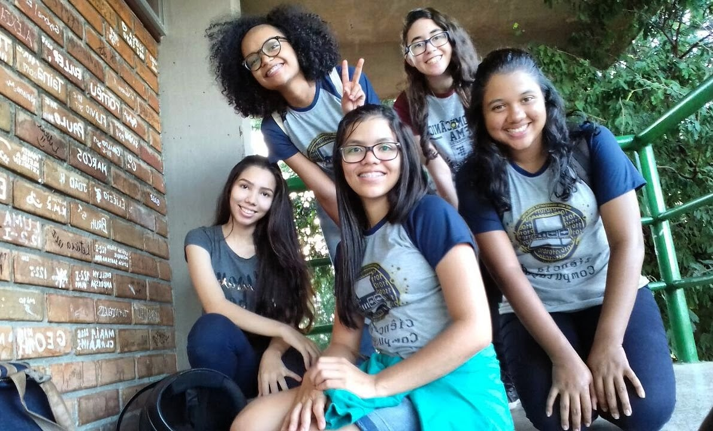
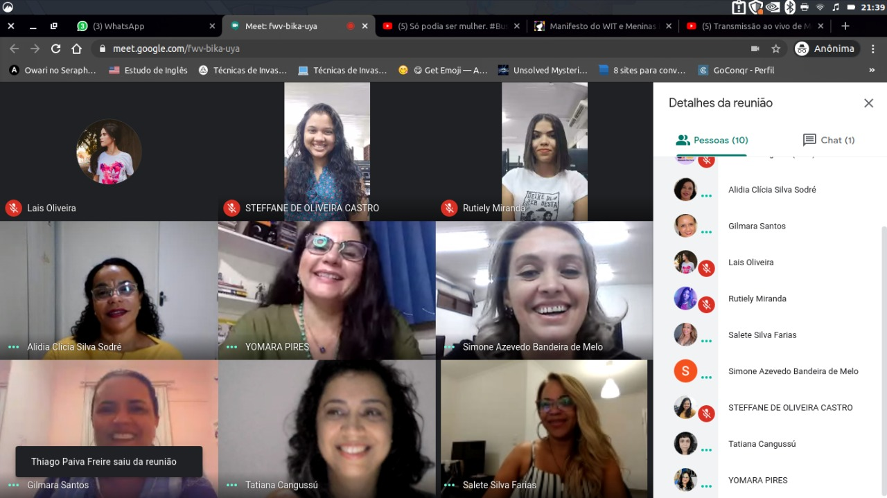

25 de abril de 2018
Minha jornada no Curso de Ciência da Computação até aqui!

Meu nome é Steffane, sou apaixonada por tecnologia. Em 2018, ingressei no curso de Ciência da Computação, embarcando em uma jornada repleta de desafios e oportunidades de crescimento. Desde o início, percebi que a representatividade feminina era escassa nesse campo tão promissor. Poucas eram as meninas que compartilhavam o mesmo espaço que eu, mas isso não me intimidou. Pelo contrário, isso me impulsionou a seguir em frente, ciente de que eu estava quebrando barreiras e trazendo diversidade para um ambiente historicamente dominado por homens.
24 de junho de 2019
Apresentação de Artigo no Evento SNTDE em São Luís - MA
Durante minha graduação em Ciência da Computação, destaco minha participação no I Simpósio Internacional e IV Nacional de Tecnologias Digitais na Educação (SNTDE 2019), sediado em São Luís. Apresentei meu artigo "O software Anki como auxílio na prática da memorização para estudantes", uma experiência enriquecedora de compartilhamento de estudos e pesquisas com outros profissionais da área. Na apresentação, destaquei os benefícios do Anki no aprendizado e memorização dos estudantes, ressaltando sua relevância na educação.
Essa foi minha primeira experiência ao apresentar um artigo em um evento internacional.
01 de agosto de 2020
Criação e execusão do projeto de extensão Mermãs Digitais (online)

O Mermãs Digitais é um projeto de extensão que nasceu em 2020 durante a pandemia, com o objetivo de incentivar o interesse das meninas do Ensino Médio da rede pública nos campos de STEM. Surgiu a partir da percepção do baixo número de mulheres cursando Ciência da Computação na minha faculdade. Em colaboração com uma colega (Rutiely), realizamos um estudo e identificamos essa lacuna, o que nos motivou a criar o projeto. Por meio do Mermãs Digitais, buscamos promover a participação ativa das meninas nessas áreas, estimulando sua curiosidade, oferecendo orientação e apoio, e visando um futuro mais inclusivo e diversificado no campo da Ciência e Tecnologia.